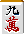

搭子理论(2)
关于两嵌。
两嵌是像 

 那样嵌张复合的形。
那样嵌张复合的形。
进张有8张，但
（1） 牌使用3张
（2） 最终作为待牌残留的话变成嵌张
根据这2点，在功能面远远不及两面听待。
1. 两嵌与双碰
例1


 摸
摸 
两嵌的问题是和双碰进的选择。
例1的话，如果用平和的概率来说是切  。
。
引 
 的话变成平和一向听。
的话变成平和一向听。
与此相对，切 或切  变成平和一向听的进张只有1种。
变成平和一向听的进张只有1种。
所以受两嵌的话看起来比较好。
但是，如果按听牌效率的话这是切 的一手。
因为引  变成平和的完全一向听。
变成平和的完全一向听。


 摸
摸 
如果雀头是两面变化的中张牌，
一般来说比受两嵌"嵌张＋双碰"受的话
好形变化多变得有利。
例2


 摸
摸 
例2可以看到三色，所以不想切  ，
，
但  切是对应万子的三面张变化，是优秀打牌吧。
切是对应万子的三面张变化，是优秀打牌吧。


 摸
摸 
例3


 碰
碰 
 摸
摸 
鸣着的手牌，还是双碰进有利。
例3是切  ，瞄准
，瞄准  和
和  的双碰。
的双碰。
切  的话，受两嵌的话进张的枚数不变，
的话，受两嵌的话进张的枚数不变，
但听牌的速度不同。
吃只能从上家，但碰可以从全员。
例4


 摸
摸 
那么说总是双碰是正解的话，没有那么单纯。
例4切  受一向听的话，期待好形变化。
受一向听的话，期待好形变化。
不只是  ，
， 也是有效牌。
也是有效牌。


 摸
摸 
在这里切  或
或  的话，进张的枚数相当增加。
的话，进张的枚数相当增加。
与此相对，切  的双碰的话，切
的双碰的话，切  不是有效牌。
不是有效牌。
完全是废张。
理论·总结
两嵌的手中，双碰进与嵌张进的选择，
比较好形变化的枚数。
一般来说双碰有利的情况多。
2. 容易看漏的两嵌
与面子复合的话两嵌容易看漏，所以需要注意。
例5


 摸
摸 
像例5这样的形，轻易摸  切的人有。
切的人有。
二巡目来了，
去掉 

 的面子的话，万子是
的面子的话，万子是 

 的两嵌。
的两嵌。
在这里切  的话，消除了
的话，消除了  的进张。
的进张。
例6



例6是一通的混一色一向听，但万子是两嵌形。
引了安全牌的话，意外地切  ，
，
引  为了不逃听牌。
为了不逃听牌。
3. 变则两嵌
偶尔会遇到"分离两嵌形"的形。
像 


 那样的形，是6张构成的8张进。
那样的形，是6张构成的8张进。
例7


 摸
摸 
这个形在一通切的时候经常遭遇。
例7当然瞄准混一色门清平和交换切，
但是  打和
打和  打有月双碰。
打有月双碰。
后者  的进张没有了。
的进张没有了。


 摸
摸 
前者是月双碰，但  只是有效牌。
只是有效牌。
切  失败只有引
失败只有引 
 的时候，
的时候，
 特别的意义什么也没有。
特别的意义什么也没有。
4个分离的组合即使形成两嵌，
也不一定有利。
结论来说，两嵌的渡等完全不需要在意。